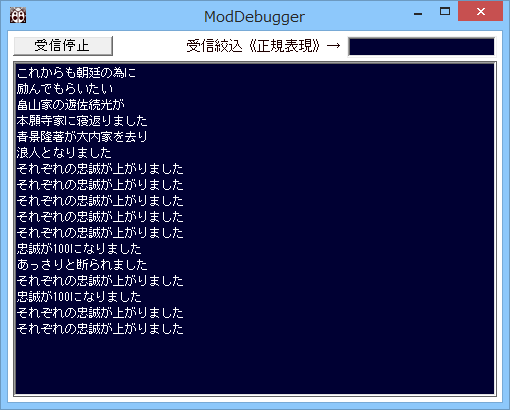

ModDebuggerは、いわば、デバッグ情報の受信機です。
MOD開発者、MOD改変者用の支援アプリケーションであり、
MODを作る人、編集する人にとって、デバッグがかなりやりやすくなるツールとなっています。

ScenarioModや、一般MOD他、MODはWindowsプログラムです。
Windowsプログラムでは、通常値を出力するコンソール部がありませんので、
デバッグ・値の監視などがやりにくい、という問題があります。
特に天翔記はVisual Studioで｢ブレイク｣といった｢プログラムが一時停止を伴うようなこと」をすると、
しばしば、不正終了してしまいますので、一層デバッグがやりにいという実情があります。
このModDebuggerはそのような問題を解決するためのツールです。
Modが出力するデバッグ出力を、リアルタイムに表示することが可能です。
「ModDebugger.exe」と「ソース」が添付されています。
Windows XP 以上
ModDebugger.zipを解凍し、ModDebugger.exe を｢天翔記フォルダ (tenshou.exeがある場所)｣に置いてください。
特にこの場所にある必要性はありませんが、TSMod.dllを導入されていれば、
天翔記の｢メニュー｣にModDebuggerを起動するためのメニューアイテムが表示されます。
このツールは、汎用的なコンソール風味のアプリケーションであり、
基本的には、天翔記そのものに依存しません。又、特定のバージョンの天翔記である必要はありません。
しかし、天翔記に対して、特別に、以下の様にに最適化されています。
天翔記が立ち上がっていると、天翔記のみに対して、そのデバッグ出力(OutputDebugStringのみ)を監視するように、自動的に切り替わります。
この際は、天翔記専用の、｢デバッグモニター監視ツール｣になります。 この間、他のアプリケーションの情報は拾いません。
天翔記が立ち上がって｢いない｣間は、Microsoftが提供する、DebugView for Windows と
似たような挙動をコンソール画面で実現します。
Windows上で実行されている全てのアプリケーションに対して、
そのデバッグ出力を監視します。(対象はOutputDebugString系列のみ)
よって、天翔記が立ち上がっていない間は、汎用的な、｢デバッグモニター監視ツール｣になります。